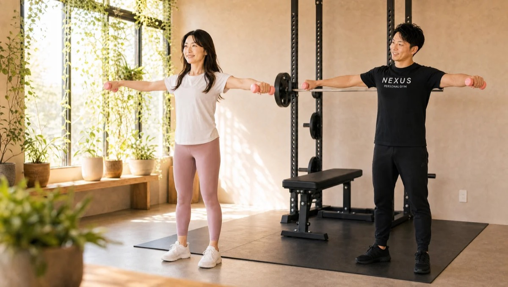
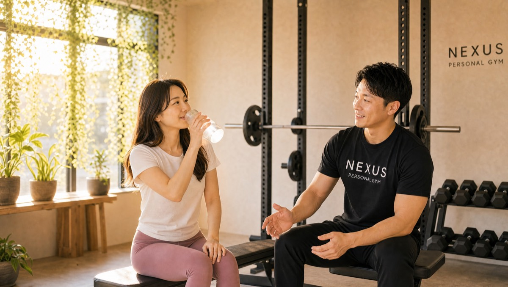
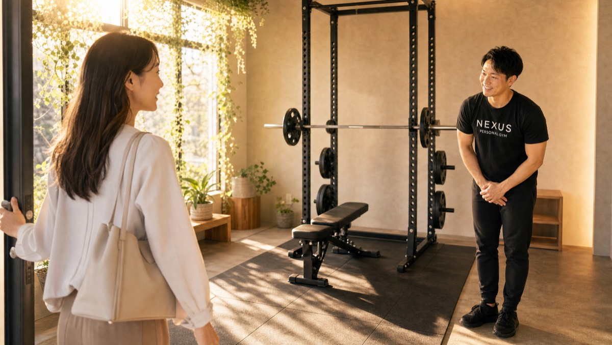
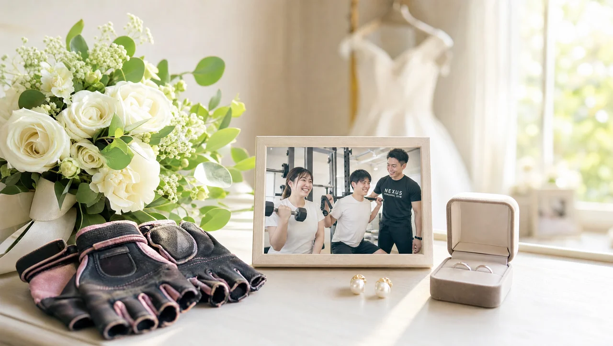
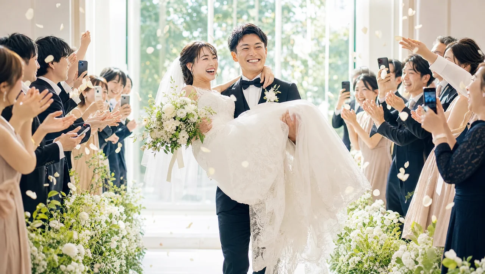
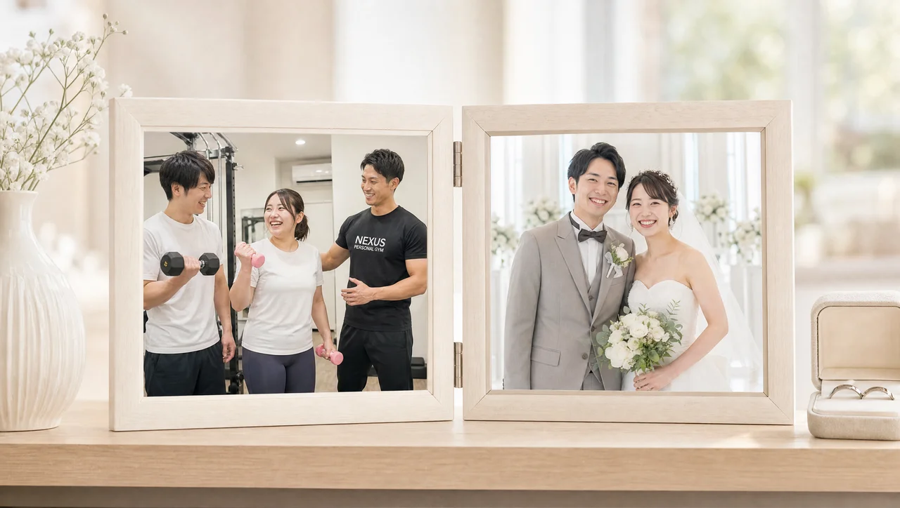

NEXUS Personal Gym ／ 東京都大田区
NEXUSパーソナルジム 武蔵新田店｜卒業できる完全個室ジム

東急多摩川線・武蔵新田駅すぐ、完全個室の隠れ家パーソナルジムです。武蔵新田店の考え方は、「一生通わせるジム」ではないこと。目指すのは、自分でトレーニングできる知識と習慣を身につけて“卒業”できる場所です。だから種目を「やらせる」だけでなく、その種目にどんな意味があるのか、なぜそのフォームなのかという理屈まで教えます。実際に「2ヶ月で体脂肪率−4%。学んだことを活かしてセルフトレーニングに移行したい」という会員も。矢口渡・下丸子からも通える、毎日8:00〜23:00・手ぶらOK・LINE予約のジムです。
- ブライダル対応
- 完全個室
- 武蔵新田駅すぐ
- “卒業”を見据えた指導
- 手ぶら通いOK
- 毎日8:00〜23:00
この店舗の特徴
NEXUS武蔵新田店は、東急多摩川線・武蔵新田駅すぐの完全個室パーソナルジム。矢口渡・下丸子エリアからも通いやすく、運動が初めての方も多く通っています。武蔵新田店がもっとも大切にしているのは、「自分でトレーニングできるようになること」。一生通わせ続けるのではなく、種目の意味やフォームの理屈まで理解してもらい、いずれ一人でも続けられる知識と習慣を身につけて“卒業”できる場所を目指しています。実際に会員からは「2ヶ月で体脂肪率が4%減り、ここで学んだ知識を活かしてセルフトレーニングに移行できるまでになった」という声も。ダイエット目的で始めた方が、いつの間にか筋トレ自体を好きになっていく——そんな変化も、この店舗ならではです。運動経験がほぼゼロの方でも、基礎のフォームから丁寧に。ウェア・タオル・ドリンク・プロテインまで無料提供の手ぶら通いOK、予約はLINEでサッと完結します。
ゴールは、一人でできるようになること

多くのパーソナルジムは、通い続けてもらうことがビジネスの前提になっています。けれど武蔵新田店が目指すのは、その逆。「いつか自分ひとりでトレーニングできるようになること」をゴールに置いています。そのために、種目を「ただやらせる」ことはしません。なぜこの種目をやるのか、どこに効かせたいのか、なぜこのフォームなのか——その理屈まで一つひとつ説明します。理由がわかると、フォームは自分で調整できるようになり、卒業後も自走できる本物の力が身につきます。会員からは「2ヶ月で体脂肪率が4%減り、これからはセルフトレーニングに移行するが、ここで学んだことを活かして続けたい」という声をいただいています。一生の財産になる知識を渡す。それが武蔵新田店の指導設計です。
2ヶ月で体脂肪率が4%減りました。これからはセルフトレーニングに移行しますが、ここで学んだ種目の意味やフォームの知識を活かして続けていけそうです。ただ痩せるだけでなく、一人でもできる力がついたのが一番の収穫です。
リバウンドしない身体の作り方
短期間で無理に痩せても、元の生活に戻ればリバウンドしてしまう——これはダイエットで一番よくある失敗です。武蔵新田店では、極端な食事制限で一時的に体重を落とすのではなく、卒業後も続けられる食べ方そのものを一緒に身につけます。だから体重が戻りにくく、肌の調子まで整いながら、無理なく変化を続けられます。会員からは「5ヶ月で6kg減。肌の調子も良くなり、リバウンドなしで無理なく続いている」という声をいただいています。大切なのは、我慢の一時的なダイエットではなく、一生ものの習慣。トレーニングで学んだ知識と、続けられる食習慣。この2つがそろえば、卒業後もリバウンドしない身体をキープできます。
5ヶ月で6kg減りました。肌の調子も良くなり、リバウンドもなく無理なく続いています。極端な食事制限ではなく、続けられる食べ方を教えてもらえたのが大きかったです。健康的に痩せられて満足しています。
気づけば筋トレが好きになっている

「ダイエットのために仕方なく」始めたはずが、通ううちにトレーニング自体が楽しくなっていく——武蔵新田店では、そんな変化がよく起こります。理由は、毎回のセッションに「学び」があるから。若くても知識が豊富なトレーナーが、身体の仕組みや種目の意味をわかりやすく教えてくれるので、「今日はこれがわかった」という手応えが積み重なります。わかると楽しい、楽しいから続く、続くから結果が出る——この良い循環が、卒業できる力につながっていきます。会員からは「ダイエット目的で始めたが、続けるうちに筋トレ自体にハマった。若いのに知識豊富なトレーナーから毎回学びがある」という声をいただいています。義務ではなく、楽しみとして続く。それが理想的な“卒業”への近道です。
ダイエット目的で始めましたが、続けるうちに筋トレ自体にハマってしまいました。若いのに知識が豊富なトレーナーで、毎回新しい学びがあります。楽しく通えているので、無理なく続けられています。
武蔵新田駅からすぐ、多摩川線ユーザーの動線に
武蔵新田店は、東急多摩川線・武蔵新田駅からすぐの立地です。武蔵新田からはもちろん、隣接する矢口渡・下丸子エリアからもアクセスしやすく、多摩川線を使う方の生活動線に自然に馴染みます。毎日8:00〜23:00の営業なので、朝の出勤前のひと汗にも、夕方以降の帰り道にも対応。ウェア・タオル・ドリンク・プロテインまで無料提供なので、通勤バッグひとつで手ぶらでOKです。予約・変更はLINEで完結し、6時間前まで無料でキャンセル可能。急な予定変更にも合わせやすく、忙しい毎日でも無理なく通い続けられます。“卒業”までのあいだ、通いやすさもしっかり支えます。
まずは無料体験から

初回は60分程度の無料体験。カウンセリングで目標や生活リズムをうかがい、姿勢チェックと実際のトレーニングまで体験できます。「運動経験がまったくない」「いつか自分ひとりで続けられるようになりたい」——そんな思いも、遠慮なくお伝えください。武蔵新田店なら、“卒業”を見据えて、あなたのペースに合わせた無理のないプランを設計します。無料体験の当日にご入会いただくと、入会金が通常55,000円→15,000円（税込）に割引されます。無理な勧誘は一切ありません。まずは話だけでも、気軽に来てください。予約はLINEからサッとどうぞ。
結婚式前のボディメイクを、武蔵新田で

「ドレスの試着で二の腕が気になった」「背中の開いたデザインを、体型を理由に諦めたくない」——挙式という動かせない期日があるからこそ、ボディメイクは最後までやり切れます。武蔵新田店では、まず挙式日とドレスのデザインをうかがい、背中・二の腕・デコルテ・ウエストという、ドレスでもっとも視線が集まる部位から優先順位をつけていきます。完全個室のマンツーマンだから、人目を気にせず自分の身体とだけ向き合えます。

残された日数によって、やるべきことは変わります。武蔵新田店では挙式日から逆算した90日プラン・60日プランを用意し、「いつまでに、どの部位を、どこまで」を最初に設計します。極端な食事制限で当日フラフラ……ということがないよう、その日のコンディションから逆算する無理のない指導で、式当日にピークを合わせます。会員の約85%が女性で、ブライダルのご相談は日常的。体に不必要に触れないノータッチ指導を基本にしているので、はじめての方も安心です。

週を追うごとに、ドレスの試着で鏡に映る自分が変わっていきます。背中がすっと伸び、二の腕のたるみが引き締まり、デコルテに華やかさが出る。「このデザインで大丈夫かな」から「このドレスを選んでよかった」へ——目標が数字ではなく“当日の自分の姿”だからこそ、モチベーションが途切れません。武蔵新田エリアで挙式を予定されている方は、エリア内の式場への下見や打ち合わせの動線に、そのままトレーニングを組み込めます。

迎えた挙式当日。積み重ねた90日・60日は、鏡の前の安心感になって返ってきます。姿勢よく背筋を伸ばして立ち、写真のどの角度でも堂々といられる——それは、頑張ってきた自分だけが手にできる自信です。武蔵新田店は、その一日のために全力で伴走します。

挙式は、新しい生活のスタートでもあります。せっかく作り上げた身体を、そのまま新生活の習慣に。武蔵新田店は毎日8:00〜23:00営業・月4回18,000円（1回4,500円〜）から続けられるので、挙式後の体型維持から、将来の産後の体型戻しまで長く伴走できます。全国約70店舗のネットワークがあるため、引っ越しや里帰りの際も最寄り店舗へ。「一生に一度」のために始めた習慣が、その後の人生を支える土台になります。
挙式まで残り80日で駆け込みました。背中の開いたドレスに合わせて、二の腕と背中を中心にプランを組んでもらい、当日は自信を持って写真に写れました。式後もそのまま通っています。
上記はサービス内容をわかりやすく伝えるためのモデルケース（イメージ）であり、実在するお客様の口コミではありません。Google口コミは本ページ内の該当セクションに実際の内容を要約して掲載しています。
挙式日からの逆算タイムライン｜ブライダル専用ページを見る料金プラン
入会金は通常55,000円、無料体験当日入会で15,000円（税込）に割引。全店舗共通の料金です。
アクセス
- 店舗名
- NEXUSパーソナルジム 武蔵新田店
- 住所
- 〒146-0093
東京都大田区矢口1-15-13 Kハウス 302号室 - 最寄り駅
- 東急多摩川線 武蔵新田駅すぐ（矢口渡・下丸子からも）
- 営業時間
- 毎日 8:00〜23:00
- 電話番号
- 050-1790-8487
Googleマップの口コミ
出典：Google マップ
NEXUS武蔵新田店はGoogle口コミ★5.0。自分でトレーニングできる知識まで身につく、“卒業”を見据えた指導が評価されています。
口コミ件数はまだ16件と少なめですが、NEXUSは全国約70店舗・会員継続率96%。近隣の系列店では久が原店が★4.9（82件）、長原店が★4.9（108件）の評価をいただいており、ブランドとしての指導品質は各店で共有されています。
2ヶ月で体脂肪率が4%減りました。これからはセルフトレーニングに移行しますが、ここで学んだ知識を活かして続けたいと思います。一人でもできる力がついたのが一番の収穫です。
5ヶ月で6kg減りました。肌の調子も良くなり、リバウンドもなく無理なく健康的に痩せられました。続けられる食べ方を教えてもらえたのが大きかったです。
ダイエット目的で始めましたが、続けるうちに筋トレ自体が好きになりました。若いのに知識が豊富なトレーナーで、毎回学びがあります。楽しく通えています。
武蔵新田店のよくある質問
Q武蔵新田で初心者向けのパーソナルジムはありますか？+
Qいずれ自分でトレーニングできるようになりたいのですが？+
Q何ヶ月くらい通えば一人でできるようになりますか？+
Q挙式まで3ヶ月ですが、結婚式に間に合いますか？+
Qドレスで気になる背中や二の腕を集中的に絞れますか？+
Q結婚式が終わった後も通い続けられますか？+
よくある質問（全店共通）
料金・制度などNEXUS全店に共通するご質問です。さらに詳しくは110問のFAQをご覧ください。
Q料金はいくらですか？+
Q手ぶらで通えますか？+
Qキャンセルはいつまでできますか？+
Q食事指導はありますか？+
Qトレーナーはどんな人ですか？+
Q女性会員は多いですか？+
Q体験の流れは？+
NEXUSパーソナルジムの特徴・料金をもっと見る